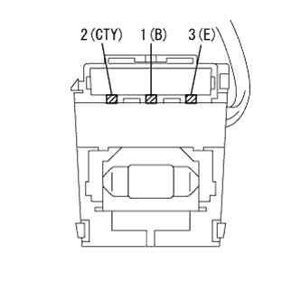

Room Light Assembly NO.1 Inspection |
| 1. Inspect Room Light Assembly NO.1 |
 |
Resistance Measurement
Using SST (Toyota electrical tester), measure the resistance between each terminal.
| Tester Connection (Terminal Symbol) | Condition | Standard |
|---|---|---|
| 1(B) - 3(E) 1(B) - 2(CTY) | OFF | 10 kΩ or higher |
| 1(B) - 3(E) | ON | Below 1 Ω |
| 1(B) - 2(CTY) | DOOR | Below 1 Ω |